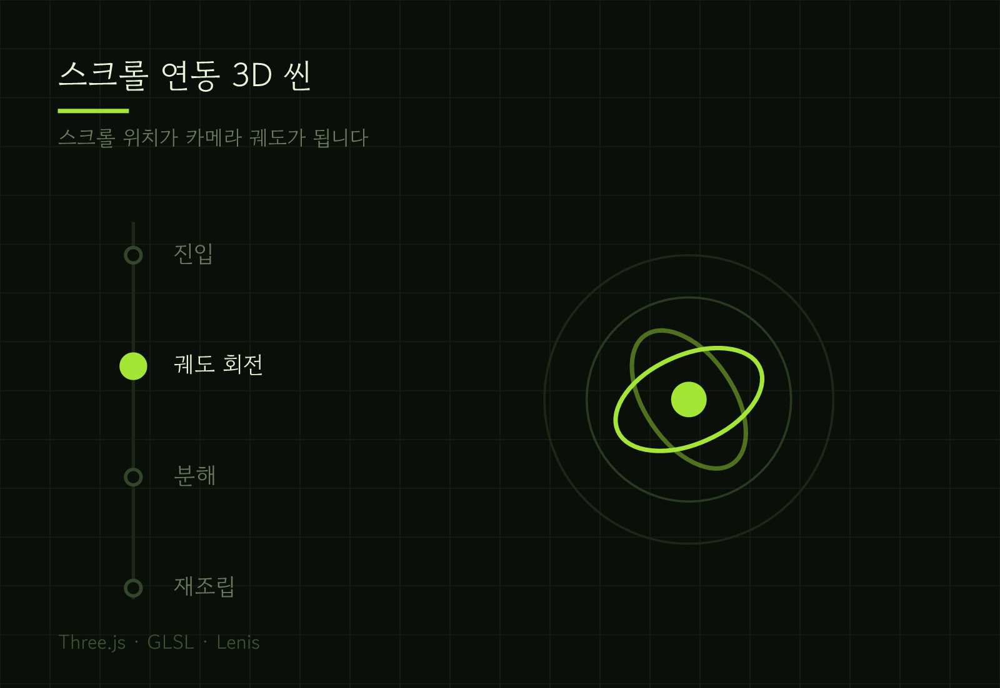
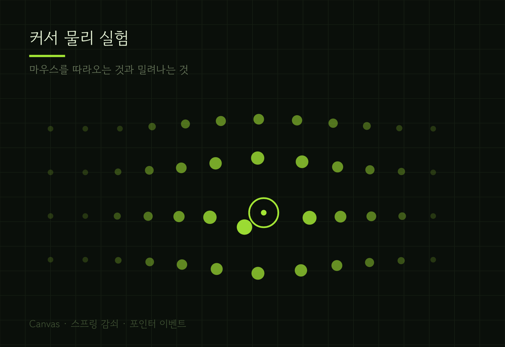
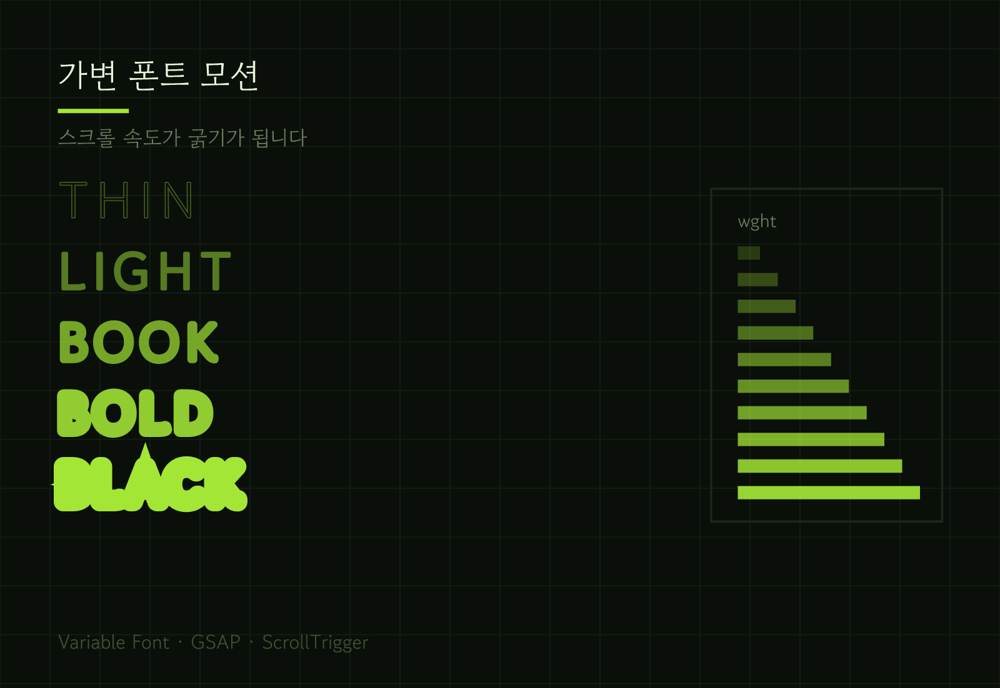
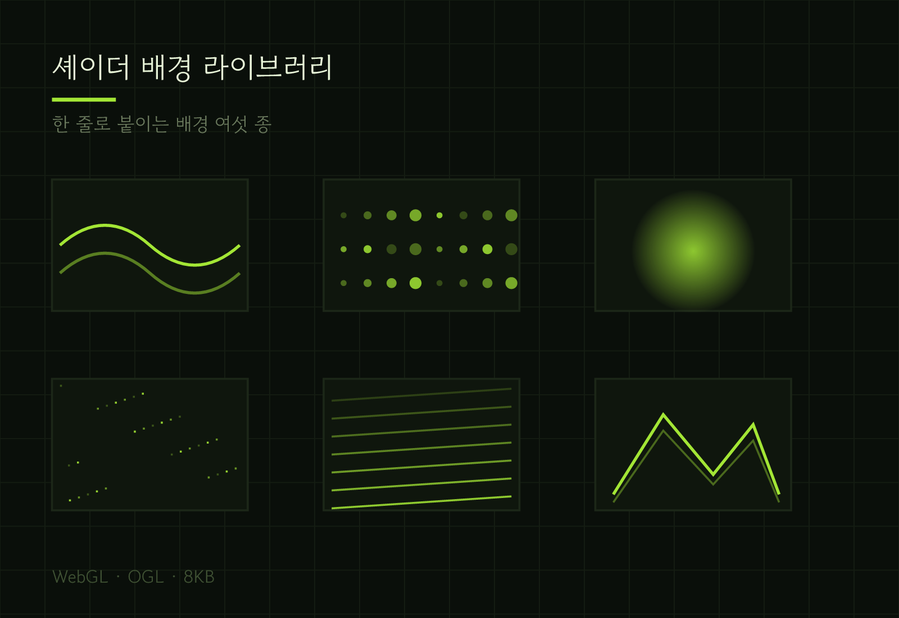

인터랙션 개발자 차민서입니다. 스크롤·커서·시간을 재료로 씁니다.
이 페이지에서 지금 벌어지고 있는 것들이 곧 제 작업물입니다 — 마우스를 움직여 보세요.

스크롤 연동 3D 씬 Three.js · GLSL · Lenis 스크롤 위치를 카메라 궤도로 바꾼 제품 소개 페이지 ↗ 링크
커서 물리 실험 Canvas · 스프링 감쇠 · 포인터 이벤트 따라오는 것과 밀려나는 것, 두 가지 반응을 한 화면에서 ↗ 링크
가변 폰트 모션 Variable Font · GSAP · ScrollTrigger 스크롤 속도를 글자 굵기로 바꾸는 타이포 실험 ↗ 링크
셰이더 배경 라이브러리 WebGL · OGL · 8KB 한 줄로 붙이는 배경 여섯 종, 전부 합쳐 8KB ↗ 링크무엇을 — 제품이 스스로 분해되고 다시 조립되는 소개 페이지입니다. 사용자는 스크롤만 하면 됩니다.
어려웠던 것 — 스크롤은 사람마다 속도가 다릅니다. 프레임에 값을 그대로 물리면 빠르게 내리는 사람에게는 애니메이션이 건너뛰어 보였습니다.
어떻게 — 스크롤 값을 목표치로 두고 카메라는 그 값을 향해 감쇠하며 따라가게 했습니다. 빨리 내려도 부드럽고, 멈추면 정확한 위치에 섭니다.
남은 것 — 저사양 기기에서는 파티클 수를 절반으로 떨어뜨립니다. 판단 기준은 아직 기기 메모리 하나뿐이라 더 다듬어야 합니다.
아래는 실제로 제품에 넣어 본 것만 적었습니다.